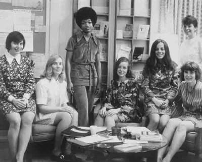
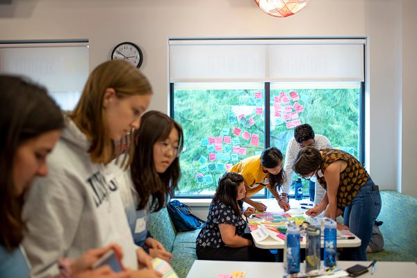

About Us
CEW+ empowers women+ and underserved individuals in the University of Michigan and surrounding communities by serving as an advocate and providing resources to help individuals reach their academic, financial, and professional potential.
History
Established in 1964, the Center for the Education of Women+ was a pioneering university women’s center. Designed to serve the needs of women students as well as women returning to school or work, CEW+ (then known as the Center for the Continuing Education of Women) was founded with a three-part mission of service, advocacy, and research. The Center for the Education of Women+ (now known as CEW+) continues its work today, serving University students, staff and faculty, community members, and all genders, facing education, employment, or other life issues.
What do we do
CEW+ provides immediate and ongoing services and the financial support needed to ensure educational success and degree completion. Women+ and underserved students are CEW+’s primary constituency, but all students are welcome. CEW+ also serves those who encounter education and career obstacles based on their non-linear paths to, and experiences within, the University community.
We proudly support students, faculty, staff, and the surrounding community with:
- Events + Workshops
- Funding
- Counseling
- Advocacy Initiatives